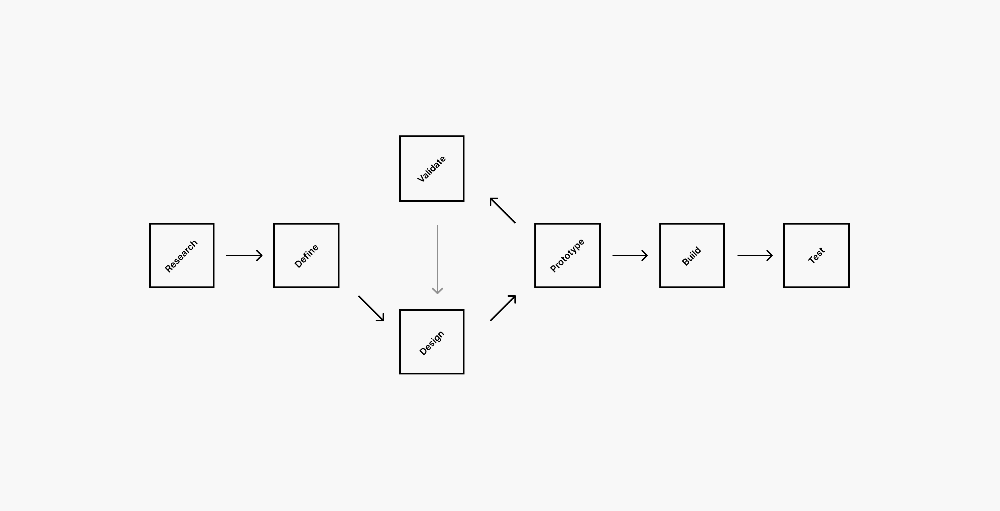

Example of the different phases of my design process.
Digging Deeper: Discovery & Research
- Get to the Heart of It: I immerse myself in understanding the project's context, business goals, and target audience.
- Gather Rich Insights: I employ a mix of user interviews, surveys, observations, and data analysis to uncover user needs, pain points, and motivations.
Define & Strategise
- Make Sense of the Findings: I consolidate research insights, identifying patterns and key takeaways.
- Pinpoint the Problem: I frame clear, actionable problem statements that will guide design solutions.
- Chart the Course: I develop a strategic plan outlining project scope, priorities, and success metrics.
Design & Iterate
- Ideate & Explore: I generate a wide range of creative solutions through brainstorming, sketching, and concept development.
- Build & Refine: I create wireframes and prototypes, iteratively testing and refining them based on user feedback.
- Craft a Seamless Experience: I design intuitive and visually appealing user interfaces that align with the brand identity.
- (Where Applicable) Design Systems: For larger projects, I develop a comprehensive design system to ensure consistency, scalability, and efficiency.
Validate & Test
- Usability Testing: I conduct thorough user testing to identify and address any usability issues or pain points.
- Metrics & Analytics: I utilise data-driven insights to assess the effectiveness of the design and make informed improvements.
Collaborate & Deliver
- Work Hand-in-Hand with Developers: I ensure a seamless handover of design assets and specifications, fostering open communication throughout the development process.
- Optimise Post-Launch: I continuously monitor performance, gather user feedback, and iterate on the design to enhance the user experience and achieve business goals.
My Commitment to Flexibility
While this framework provides a solid foundation, I understand that every project is unique. I adapt my approach as needed, tailoring it to the specific requirements and constraints of each project. My ultimate goal is to deliver user-centric design solutions that drive business success.
Key Principles
- Empathy: Always put the user at the heart of the design process.
- Collaboration: Foster open communication and collaboration among team members and stakeholders.
- Iteration: Continuously test, learn, and refine design solutions.
- Data-Driven: Utilise data and insights to make informed design decisions.
- Adaptability: Remain flexible and adaptable to the unique needs of each project.